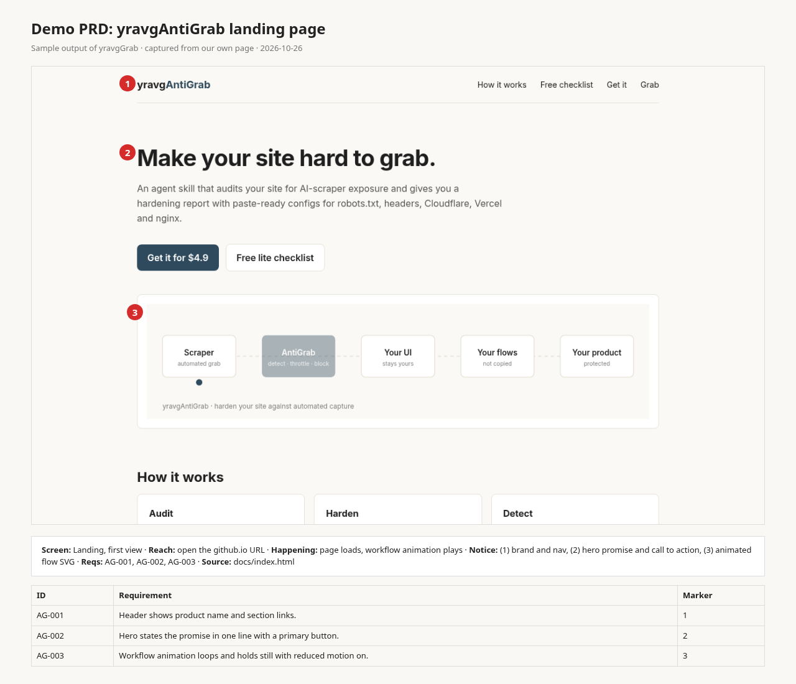

An agent skill that captures a public website, app or tutorial and writes a captioned PRD, a parity checklist and a build roadmap. It checks robots.txt and AI opt-outs first, and stops if the site says no.
Install the skillView on GitHub
Checks scope, robots.txt, AI opt-out and licence before touching anything.
Screens, states, video frames and user flows from public pages.
Builds an inventory and a parity checklist of menus, flows and motion.
One offline HTML file plus md and PDF, every screenshot captioned with numbered markers.
A build roadmap and a zip any coder or agent can start from.

cp -r yravgGrab ~/.claude/skills/
Works in Claude Code and Cursor. Then ask your agent to /grab a URL.
Public pages only. No logins, paywalls or bypassing blocks. If a site opts out of AI or forbids it in its terms, yravgGrab stops.
Yes, MIT licensed.
No. It only works on public pages.
See yravgAntiGrab.